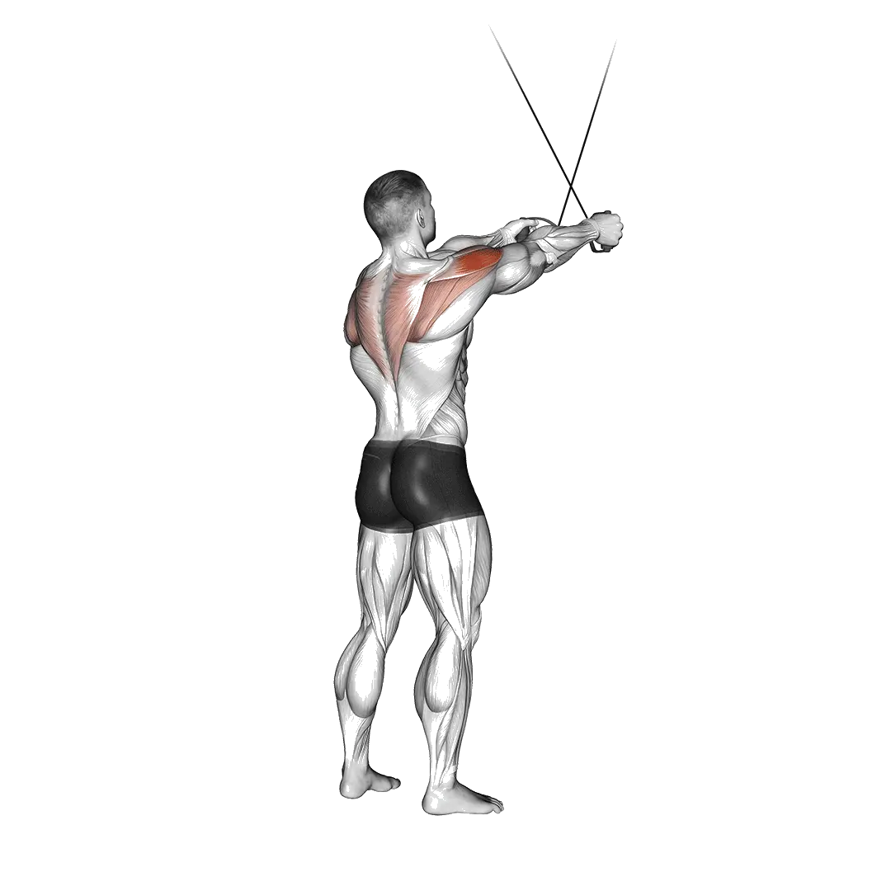

Cable reverse fly
Cable reverse fly menampilkan berat rata-rata dan standar kekuatan sebagai referensi untuk kategori punggung. Otot utama: Deltoid.

Berat rata-rata: Menengah
Acuan untuk level menengah.
Pria
62 lb
Wanita
32 lb
Berat rata-rata Cable reverse fly [1RM]
| Level | ||
|---|---|---|
| Dasar | 8 lb | 7 lb |
| Pemula | 28 lb | 17 lb |
| Menengah | 62 lb | 32 lb |
| Mahir | 108 lb | 52 lb |
| Pro | 165 lb | 76 lb |
Catatan: standar ini adalah estimasi 1RM berdasarkan lifter rata-rata. Berat badan, usia, dan faktor pribadi lain dapat memengaruhi hasil. Lihat data detail pada tabel di bawah.
Standar kekuatan Cable reverse fly (lb)
Pria berdasarkan berat badan (lb) [1RM]
| Berat badan | Dasar | Pemula | Menengah | Mahir | Pro |
|---|---|---|---|---|---|
| 110 | 1 | 12 | 36 | 71 | 116 |
| 120 | 2 | 15 | 40 | 78 | 125 |
| 130 | 4 | 18 | 45 | 84 | 132 |
| 140 | 5 | 21 | 49 | 90 | 140 |
| 150 | 6 | 23 | 53 | 95 | 147 |
| 160 | 8 | 26 | 57 | 101 | 153 |
| 170 | 9 | 29 | 61 | 106 | 160 |
| 180 | 11 | 31 | 65 | 111 | 166 |
| 190 | 12 | 34 | 69 | 116 | 172 |
| 200 | 14 | 37 | 72 | 120 | 178 |
| 210 | 15 | 39 | 76 | 125 | 183 |
| 220 | 17 | 42 | 79 | 129 | 188 |
| 230 | 18 | 44 | 83 | 134 | 194 |
| 240 | 20 | 47 | 86 | 138 | 199 |
| 250 | 22 | 49 | 89 | 142 | 204 |
| 260 | 23 | 51 | 93 | 146 | 208 |
| 270 | 25 | 54 | 96 | 150 | 213 |
| 280 | 26 | 56 | 99 | 154 | 218 |
| 290 | 28 | 58 | 102 | 157 | 222 |
| 300 | 29 | 60 | 105 | 161 | 226 |
| 310 | 31 | 62 | 107 | 165 | 230 |
Pria berdasarkan usia [1RM]
| Usia | Dasar | Pemula | Menengah | Mahir | Pro |
|---|---|---|---|---|---|
| 15 | 7 | 24 | 53 | 92 | 140 |
| 20 | 8 | 27 | 60 | 105 | 160 |
| 25 | 8 | 28 | 62 | 108 | 165 |
| 30 | 8 | 28 | 62 | 108 | 165 |
| 35 | 8 | 28 | 62 | 108 | 165 |
| 40 | 8 | 28 | 62 | 108 | 165 |
| 45 | 8 | 27 | 59 | 103 | 156 |
| 50 | 7 | 25 | 55 | 96 | 147 |
| 55 | 7 | 23 | 51 | 89 | 136 |
| 60 | 6 | 21 | 46 | 81 | 124 |
| 65 | 6 | 19 | 42 | 73 | 112 |
| 70 | 5 | 17 | 38 | 66 | 100 |
| 75 | 5 | 15 | 34 | 59 | 90 |
| 80 | 4 | 14 | 30 | 53 | 80 |
| 85 | 4 | 12 | 27 | 47 | 72 |
| 90 | 3 | 11 | 24 | 43 | 65 |
Wanita berdasarkan berat badan (lb) [1RM]
| Berat badan | Dasar | Pemula | Menengah | Mahir | Pro |
|---|---|---|---|---|---|
| 90 | 4 | 12 | 25 | 43 | 64 |
| 100 | 5 | 13 | 26 | 45 | 67 |
| 110 | 5 | 14 | 28 | 47 | 69 |
| 120 | 6 | 15 | 29 | 48 | 71 |
| 130 | 6 | 16 | 30 | 50 | 73 |
| 140 | 7 | 16 | 31 | 51 | 74 |
| 150 | 7 | 17 | 32 | 52 | 76 |
| 160 | 8 | 18 | 33 | 54 | 78 |
| 170 | 8 | 19 | 34 | 55 | 79 |
| 180 | 9 | 19 | 35 | 56 | 80 |
| 190 | 9 | 20 | 36 | 57 | 82 |
| 200 | 9 | 21 | 37 | 58 | 83 |
| 210 | 10 | 21 | 38 | 59 | 84 |
| 220 | 10 | 22 | 39 | 60 | 85 |
| 230 | 11 | 22 | 39 | 61 | 87 |
| 240 | 11 | 23 | 40 | 62 | 88 |
| 250 | 11 | 24 | 41 | 63 | 89 |
| 260 | 12 | 24 | 42 | 64 | 90 |
Wanita berdasarkan usia [1RM]
| Usia | Dasar | Pemula | Menengah | Mahir | Pro |
|---|---|---|---|---|---|
| 15 | 6 | 14 | 27 | 44 | 64 |
| 20 | 6 | 16 | 31 | 50 | 74 |
| 25 | 7 | 17 | 32 | 52 | 76 |
| 30 | 7 | 17 | 32 | 52 | 76 |
| 35 | 7 | 17 | 32 | 52 | 76 |
| 40 | 7 | 17 | 32 | 52 | 76 |
| 45 | 6 | 16 | 30 | 49 | 72 |
| 50 | 6 | 15 | 28 | 46 | 67 |
| 55 | 5 | 14 | 26 | 43 | 62 |
| 60 | 5 | 12 | 24 | 39 | 57 |
| 65 | 4 | 11 | 22 | 35 | 51 |
| 70 | 4 | 10 | 19 | 32 | 46 |
| 75 | 4 | 9 | 17 | 28 | 41 |
| 80 | 3 | 8 | 15 | 25 | 37 |
| 85 | 3 | 7 | 14 | 23 | 33 |
| 90 | 3 | 7 | 12 | 20 | 30 |
Catatan: beban yang tertera pada machine dan cable dapat berbeda menurut merek dan mekanisme alat. Gunakan sebagai referensi untuk kondisi alat yang sebanding.
Catat dan analisis di aplikasi Shiba
Lihat beban, repetisi, dan perkembangan di satu tempat.
Cara membaca tabel
| Level | Deskripsi | Distribusi |
|---|---|---|
| Dasar | Menguasai teknik yang benar dan berlatih konsisten minimal 1 bulan. | Bawah 5% |
| Pemula | Berlatih konsisten minimal 6 bulan. | Atas 80% |
| Menengah | Berlatih konsisten lebih dari 2 tahun. | Atas 50% |
| Mahir | Berlatih terencana lebih dari 5 tahun. | Atas 20% |
| Pro | Menekuni latihan ini secara khusus lebih dari 5 tahun. | Atas 5% |
Latihan lainnya
Punggung
Yates row
Punggung
Bent-over dumbbell row
Punggung / Dumbbell
Back extension
Punggung
Bench pull
Punggung
Machine back extension
Punggung / Machine
Barbell pullover
Punggung / Barbell
One-arm pull-up
Punggung / Bodyweight
Dumbbell bench pull
Punggung / Dumbbell
Inverted row
Punggung
Renegade row
Punggung
One-arm lat pulldown
Punggung
One-arm seated cable row
Punggung / Cable